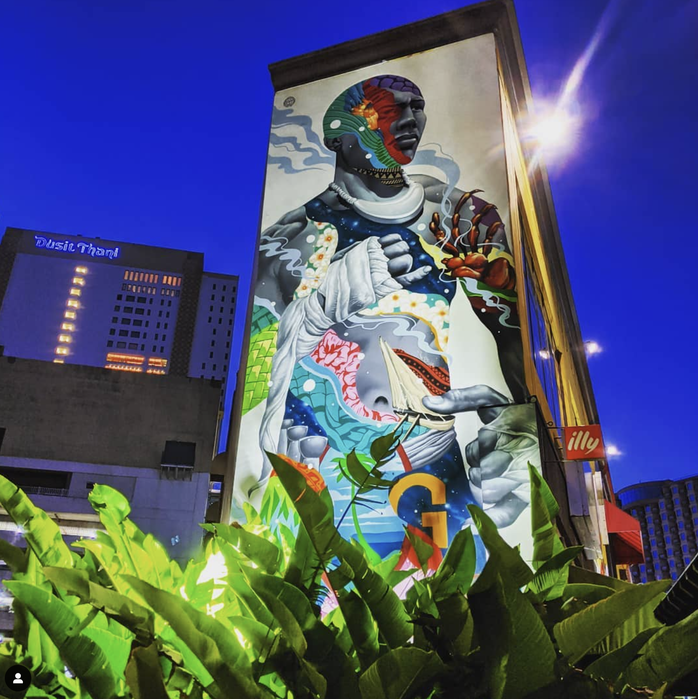
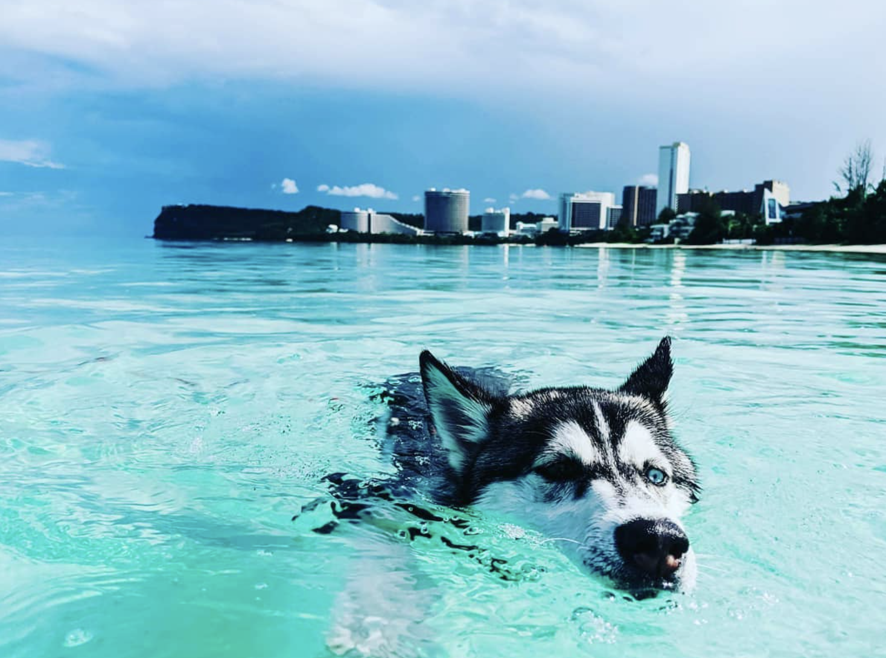
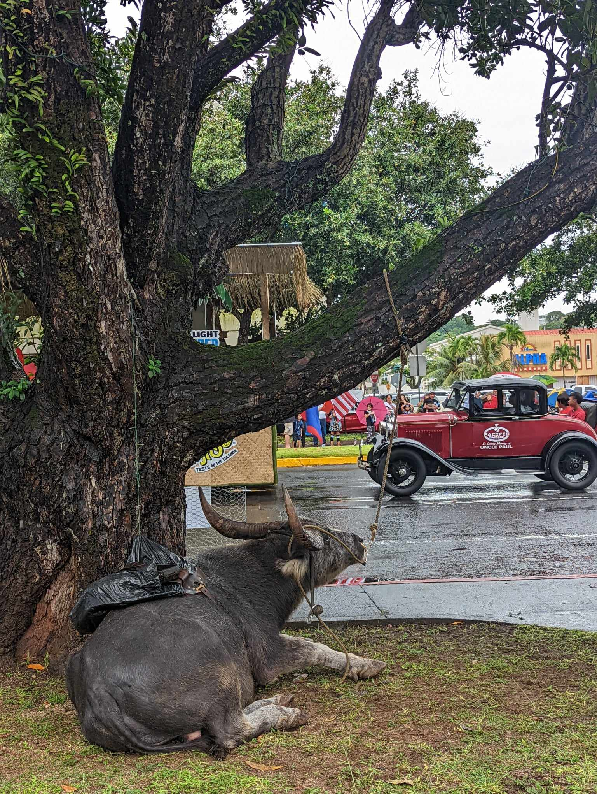
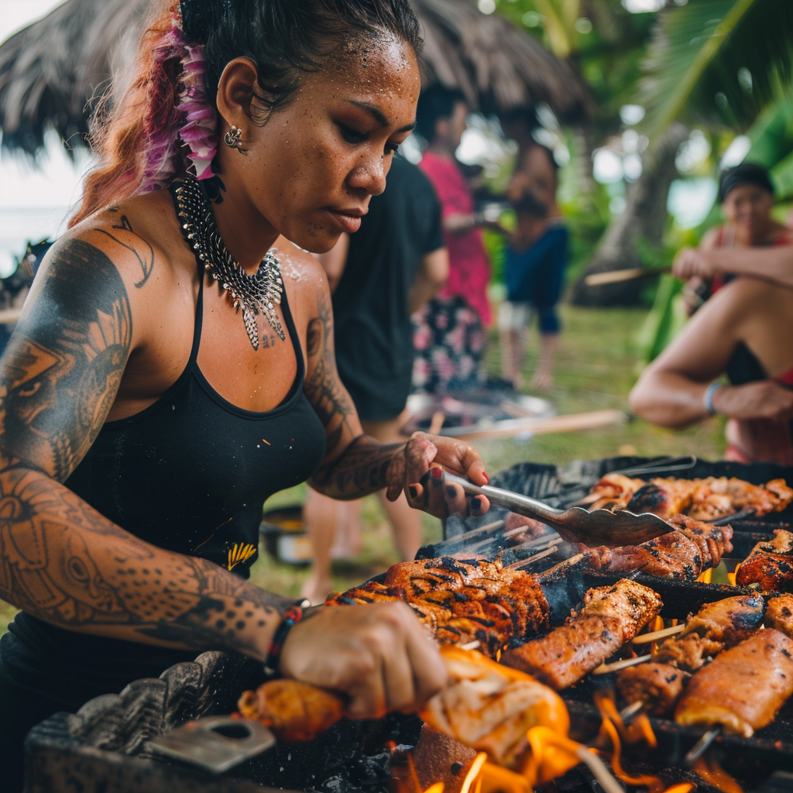

Guam Travel Itinerary
List of all the places to visit when on the beautiful tropical paradise that is Guam
Welcome to the tropical paradise of Guam, where stunning natural beauty,
rich cultural heritage, and unforgettable experiences await you! Located
in the heart of the Western Pacific, Guam is an enchanting island
destination brimming with adventure and relaxation.

Start your journey at Tumon Bay, a picturesque haven known for its
pristine beaches, vibrant nightlife, and world-class resorts.
Dive into crystal-clear waters, lounge on white sandy shores, or
indulge in exciting water sports like snorkeling and parasailing.
Tumon Bay is the perfect gateway to explore Guam's aquatic wonders
and soak up the island vibe.

For a taste of Guam's cultural heritage, venture to the
historic village of Inarajan and discover the natural beauty
of the Inarajan Pools. These stunning natural pools are nestled amidst
lush greenery and ancient latte stones, providing a serene backdrop for
swimming, picnicking, and immersing yourself in Chamorro traditions.

Embark on a journey through history and nature at Hagatna,
the capitol city renowned for its pristine beaches and muesuems,
and ancient latte stones, colonial era cannons, and architecture at the many parks
that still house archeological treasures from the Spanish conquest.
Get serenaded by Chamorro singers through the cobble stone streets,
encounter Chamorro art, dance, and cuisine,
and explore ancient Chamorro ruins or latte stones brought to from the
remote parts of Guam by the Spanish dating back thousands of years.
Ritidian is a treasure trove of natural wonders
and cultural heritage waiting to be discovered.

No visit to Guam would be complete without sampling the island's delectable
cuisine at Chamorro Village Market, including traditional dishes like Tinaktak,
Kadun Pica, and Tatiyas. Indulge your taste buds in the flavors of Chamorro cuisine,
featuring local ingredients like venison, coconut, and fresh seafood.
Whether you're savoring savory Kelaguen or enjoying sweet treats like Tatiyas,
Guam's culinary delights are sure to tantalize your senses.
A trip to this central market festival is never complete without experiencing the
thrill and excitment of riding upon one of Guam's Caraboa or enjoying the
countless other attractions you can find every Wensday night in Hagatna at Chamorro Village.

The purpose of this page is to invite the traveler
to experience the largest of the Marina Islands in the heart of micronesia,
our beautiful tropical paradise of Guam.
Experience the magic of Guam's tropical paradise and create memories that will last a lifetime.
With its stunning landscapes, rich cultural heritage, and warm hospitality,
Guam invites you to embark on the adventure of a lifetime.
Plan your visit today and discover why Guam is truly where America's day begins!.